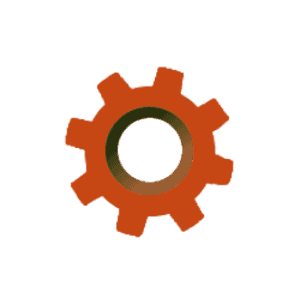
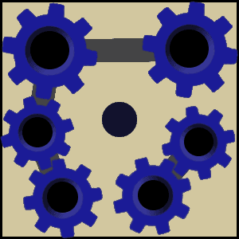

Der Roboter soll alle Zahnräder

in die Maschine
einsetzen.spring() kann der Roboter eine Ebene höher springen, falls sich über ihm eine Plattform befindet.
spring() kann der Roboter eine Ebene höher springen, falls sich über ihm eine Plattform befindet.bauePlattformVorne() kann der Roboter vor sich eine Plattform bauen, sofern dort nicht schon eine ist.
bauePlattformOben() kann der Roboter über sich eine Plattform bauen, sofern dort nicht schon eine ist.